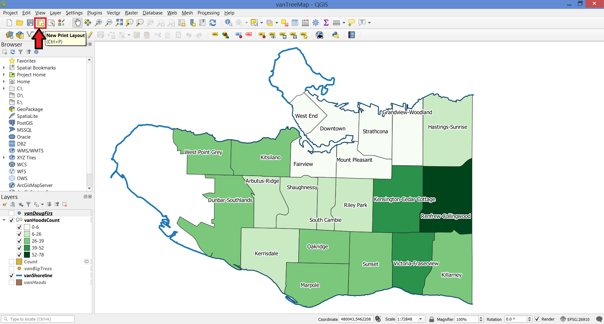
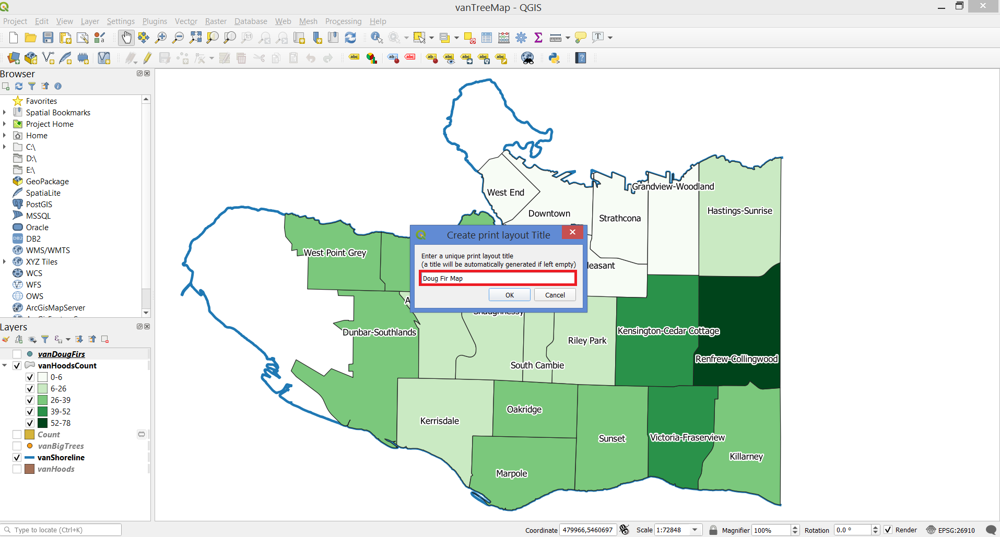
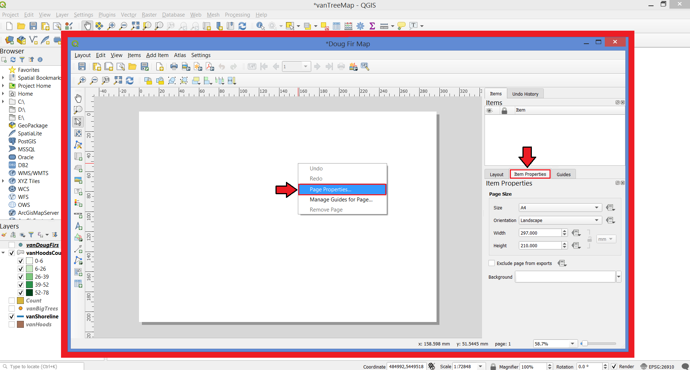
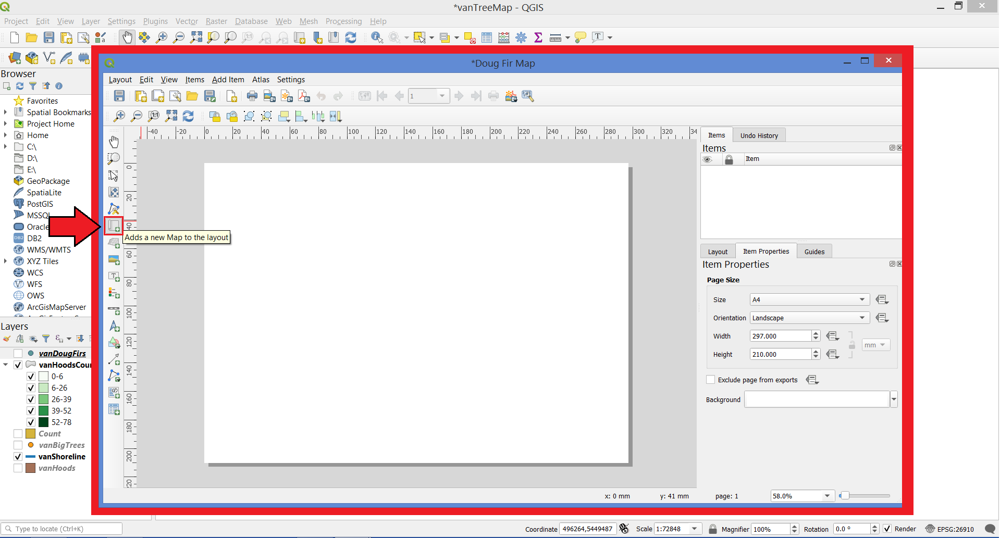
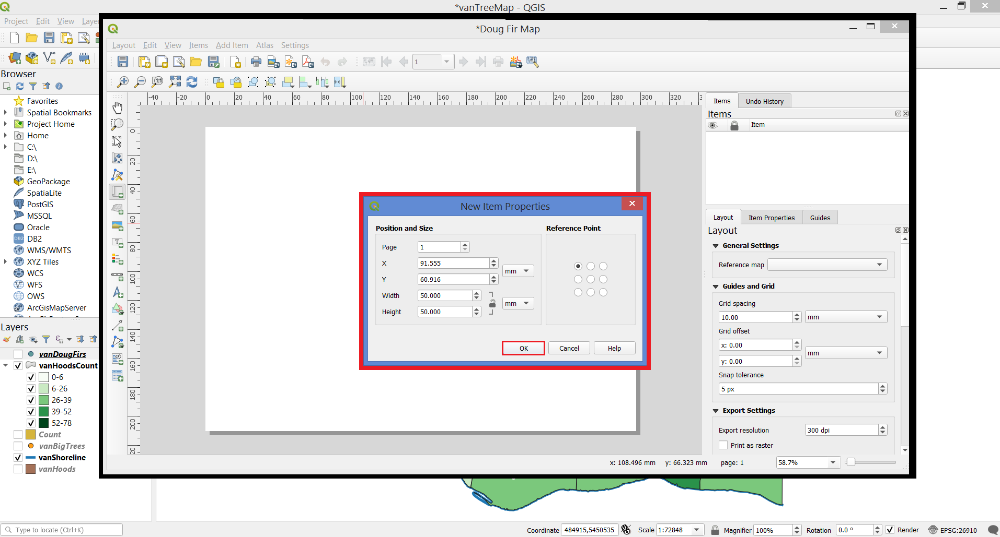
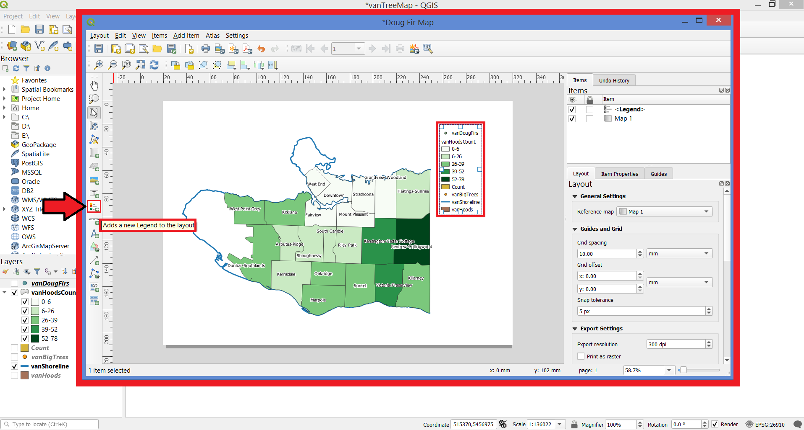
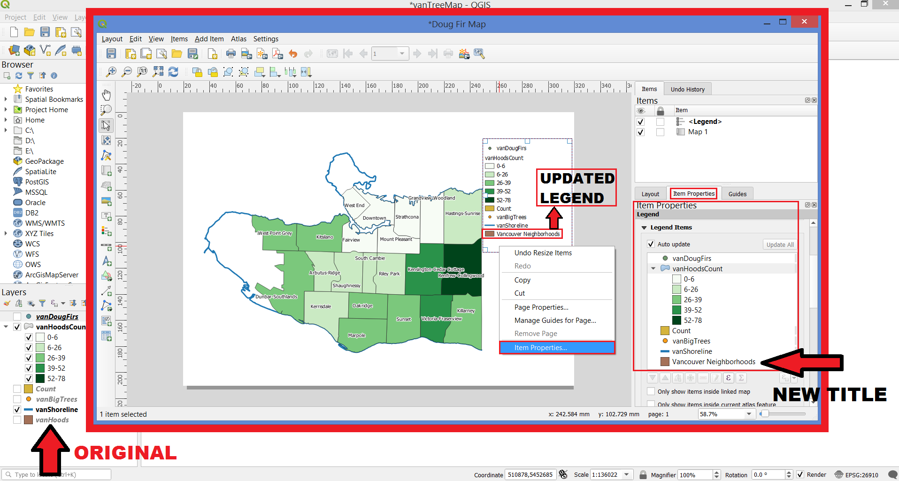
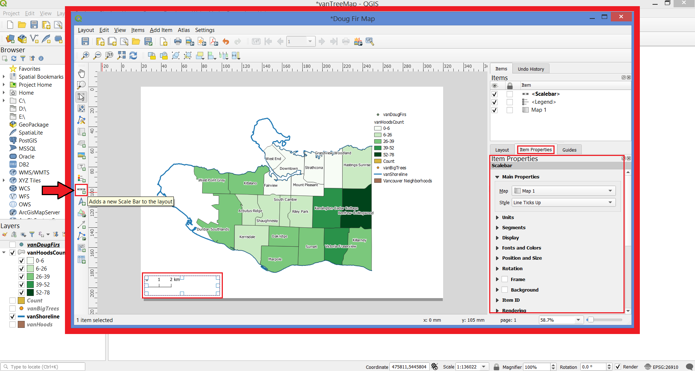
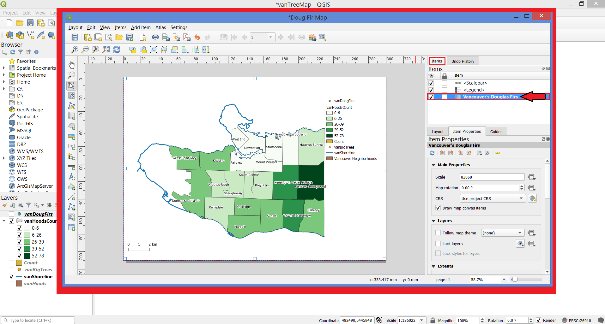
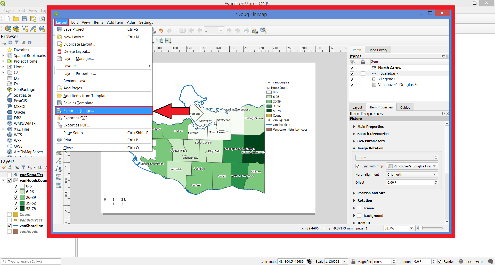

In the Toolbar, click on the New Print Layout button.

In the pop-up window, name the layout Doug Fir Map.

Right-click on the resulting page and select Page Properties. On Item Properties, change the layout to your desired dimension.

Using the Add new map button, add a new map to your layout, by clicking on the white canvas with the left button.

A New Item Properties window will pop. Add the desired setting and press OK.

Drag the map to cover the entire layout. Use the Move item content button to fine tune your map’s placement.
You’ll need to add context to your map using some cartographic elements.
Using the Add legend button, click and drag a box in the area you would like to place the legend.

Right-click your legend and select Item Properties.
At Item Properties, double-click your layer names and type-in more relevant titles.

Click on the Add scale bar button, and click and drag on the map to create a bar. Select the style as you desire.

Using the Add title button, add a title Vancouver’s Douglas Firs.
Under Items, double-click on the map and rename it to Vancouver’s Douglas Firs.

Using the Add picture button, select the Arrow folder, then pick whichever arrow you would like. (Alternately, select a custom arrow or any other image).
Then, select the image from the list of items added to the map if it is not already selected.
Under item properties, scroll down until you see Image Rotation. Choose Sync with map, then select the map you’d like to sync with. For type of alignment, select Grid or Magnetic north.
In the Print Layout Menu, click on Layout and then on Export as Image.

Save your file as a .jpeg image in your project folder. Now you have a static image of your map and you should get a message like this
Close the print layout menu.